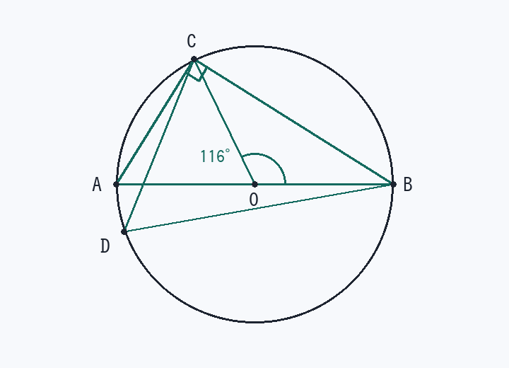

第7回 円周角は中心角の半分、直径なら 90°
円Oの周上に4点 A, B, C, D があり、線分 AB は円Oの直径である。∠BOC = 116° のとき、(1) ∠BAC、(2) ∠BDC、(3) ∠ACB を求めよ。
角度を見る前に「どの弧に立つ角か」を決めるのがコツです（動画・音声解説つき）

解法の型
① 円周角 = 中心角 ÷ 2（同じ弧） ② 同じ弧の円周角は等しい ③ 直径に立つ円周角 = 90°
先に「どの弧に立っている角か」を確認します。ここを飛ばすと必ず迷います。
解答手順
- (1) 中心角の半分∠BAC は弧BCに立つ円周角∠BAC = 116° ÷ 2 = 58°
- (2) 同じ弧なら等しい∠BDC も弧BCに立つ円周角 → ∠BDC = ∠BAC = 58°
計算し直す必要はありません。「同じ弧」を見つけたら等しいで終わりです。
- (3) 直径に立つ円周角AB は直径 → 中心角は 180°∠ACB = 180° ÷ 2 = 90°
検算：△ABC で ∠ABC = 180° − 58° − 90° = 32°。一方 △OBC は OB = OC の二等辺三角形なので底角は (180° − 116°) ÷ 2 = 32° で一致します。
差がつく2行
- 点 D が反対側の弧（弧BC側）にあるときは ∠BDC = 180° − 58° = 122°。これが「円に内接する四角形の向かい合う角の和は 180°」です。
- 逆も使えます：∠BAC = ∠BDC なら4点 A, B, C, D は同一円周上（円周角の定理の逆）。証明問題で強力です。
覚えるべきこと（在庫に入れる1行）
円周角は中心角の半分／直径なら 90°
類題（翌日、何も見ずに）
- 中心角が 74° のときの円周角
答え
74° ÷ 2 = 37°
- 円に内接する四角形 ABCD で ∠A = 105° のときの ∠C
答え
180° − 105° = 75°
- AB が直径の円周上の点 P について ∠APB
答え
P がどこにあっても 90°